Syria News
syria news, syria map, syria war, syria conflict, syria chemical weapons
In this article I'm going to show you evidence that the Syrian government was framed in the chemical weapons attack of August 21st, 2013.
I'm going to explain why they were framed, how this realistically ties into a World War 3 scenario, why there will be another "event" that threatens war, and also propose a course of action.
All skeptics are highly welcomed, but note the definition:
Skeptic - to suspend one's belief of all possible conclusions until presented with enough valid information. To question everything when presented with new information, especially their own assumptions. Logic and reasoning above all else.
The opposite of a skeptic - to automatically dispose of new ideas that are contrary to "group thought" or public opinion. Tradition, the past, and the collective above all else.
*External references may be found by clicking the blue links throughout the article.
Now let's begin.
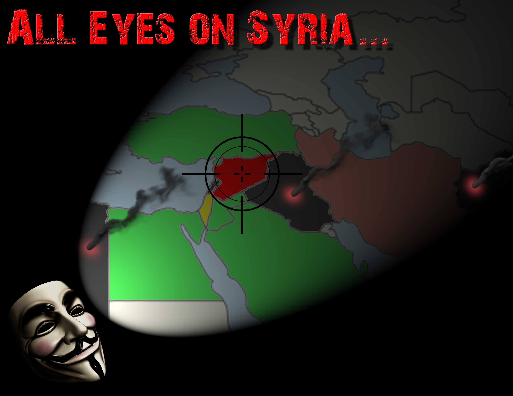
Protests in Syria are said to have started in early 2011.
Since then, countless demonstrations across some 21 countries in the Middle East (known as the Arab Spring uprisings) have taken place. 80% of total deaths have occurred solely within Syria (over 120,000 people).
To put this into perspective, the US lost less than 50,000 soldiers directly from combat during the Vietnam War.
According to the United Nation's projections, by the end of 2014 more than half of Syria’s pre-war population of 22.5 million will have either fled the country or been internally displaced!
Because of this, the Syrian conflict is effecting its neighboring countries to accommodate all of the refuges, including: Lebanon, Jordan, Turkey, Iraq, and even Egypt.
Now the question is, what's really going on here?
10. Is it possible to dis-prove Washington's "Undeniable Evidence?"
One of the main influential figures supporting a United States strike in Syria, US Secretary of State, John Kerry, said the following...
What's funny is that he speaks more about using military force than even the US Army General, Martin Dempsey.
Now in spite of what John Kerry said, let's put this case together as a district attorney might when deciding who to prosecute for a crime.
Let's establish motive, means, opportunity, and evidence.
These are the elements you need to reach a guilty verdict in a court. These are the elements that are critically lacking in the "unclassified report" found at WhiteHouse.gov, as we'll soon go over.
But first, before we start looking directly at August 21, 2013, it would be irresponsible of us if we didn't first look at what happen 5 months earlier.
Many people don't realize this, but the US and Israeli government first tried to blame Syria's government for using chemical weapons (particularly the deadly nerve gas, sarin) on March 19, 2013 in Khan Al-Assal in Aleppo, Syria (the largest city in the country).
Killing 25 (16 of which Syrian soldiers) and injuring 86, making it the deadliest chemical attack prior to August 21st.
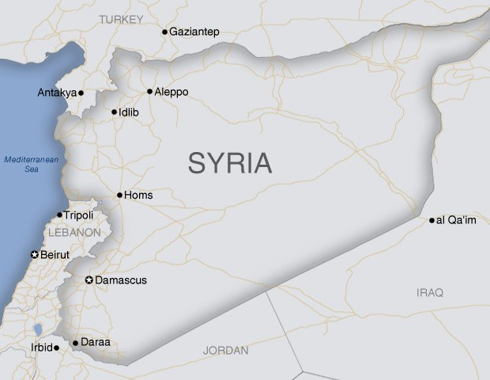
|
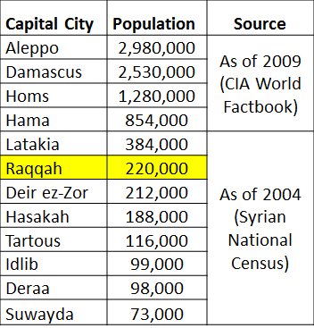 The top four listed above are Syria's main cities, while the highlighted "Raqqah" was the first and only urban district the rebels took over. The image on the right shows the locations where protests first began simultaneously. |
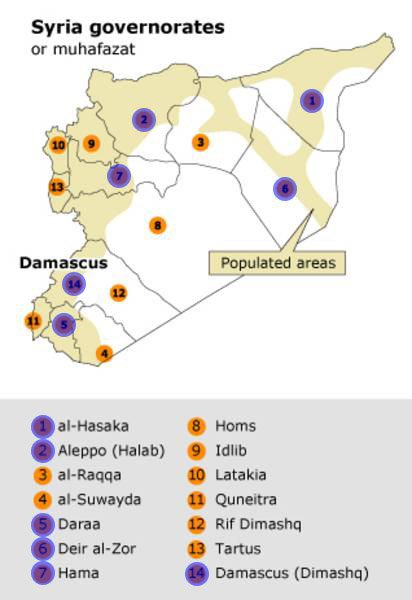 |
Although the US government wasn't wasting any time to conclude attacking Syria was the "best option," the UN insisted on investigating the issue themselves. Strangely enough on behalf of the Syrian government's immediate request.
And on May 6th 2013, UN investigator, Clara Del Ponte, went public stating that the evidence they found indicated that it was the Syrian rebels that had used the Sarin gas. So the Syrian government was falsely accused then, surprise, surprise.
Russia's UN ambassador, Vitaly Churkin, agreed with Del Ponte's conclusion after Russian experts visited the location where the projectile struck and took their own samples of material from the site.
Those samples were then analyzed at a Russian laboratory certified by the Organization for the Prohibition of Chemical Weapons.
According to lab results they found that the presence of Hexogen, utilized as an opening charge and which is not used in standard chemical munitions, pointed to the attack being launched by the rebels.
They even handed over a 100 page report to the UN with their findings in July.
So rather than cover these critical developments, the mainstream media did what they always do when they don't want the public to look at something...
... simply change the subject.
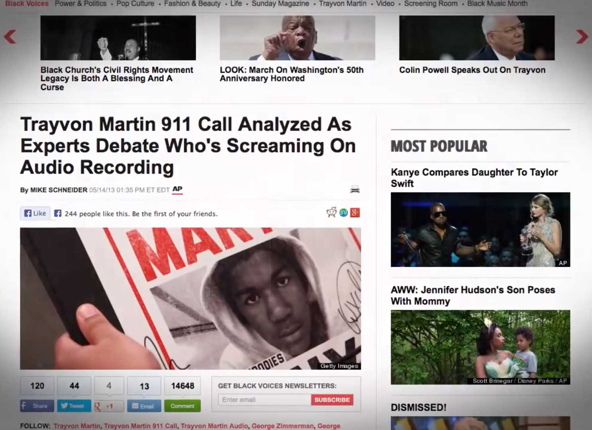
Thus the conclusion was that the "Syrian rebels" were trying to frame the Syrian government in order to gain international military support from the US government via Obama's "Red Line" warning given almost a year earlier on August 20, 2012.
The latter claim that he never set a "red line" was his tactful attempt to justify intervention by turning his "red line" into the world's "red line" that everyone should obviously care about. Emotions before logic in other words.
None the less, ever since the "red line" warning, rebels started uploading countless videos and pictures onto social media to attempt blaming the Syrian government for using chemical weapons, particularly sarin gas.
Despite the fact that most of these cases lack the evidence of sarin gas being used (instead legal substances such as chlorine, etc. were used or just outright faked) and none of them are able to prove which side was responsible, the US government still tries to use them as a part of their claim to "undeniable evidence."
This would explain why Syria's President Bashar al-Assad had this to say to US Secretary of State, John Kerry...
In John Kerry's defense he wasn't always this malevolent, as he once spoke on behalf of the Vietnam Veterans Against the War (VVAW) in Washington. What ever happened to that guy?
Now of course the fact that the US government supported rebels that attempted to frame the Syrian government in order to build support for an international invasion would be bad enough.
But let's remember that the deadly nerve gas sarin was in fact used on civilians, which is illegal according to international law.
So the US government is financially and vocally supporting those who used it. That makes them an accomplice.
You would think that the US government after this would withdraw its support, but it didn't.
In fact, it just kept increasing it.
In July of 2013, the US began openly discussing multiple strikes against Syria, as if their lies had not been exposed.
This of course brings us to the attack on August 21st, 2013, where they attempted once again to frame the Syrian government for the use of sarin gas... and once again they got caught.
(James Corbett of corbettreport.com joins Gary Franchi of WHDT9 on the Next News Network on April 2nd, 2013)
9. What Happened on August 21st, 2013?
One year to the date after Obama's Red Line Speech (attacks began shortly after midnight).
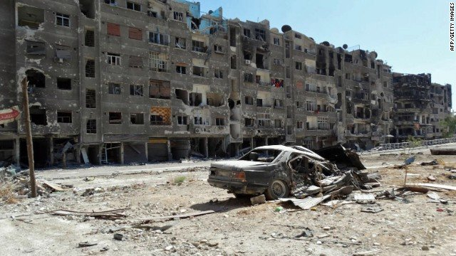
The first wave of media coverage tried to pin the attack on the Syrian government. The US and France instantly came out condemning Syria's president Bashar Assad.
By August 24th, the Pentagon had already announced plans for missile strikes, but even as they did their story was quickly falling apart.
The Syrian army came forward that same day with footage to back up their report that they had uncovered a massive chemical weapons cache in rebel tunnels in the Damascus suburb of Jobar.
This is the exact neighborhood where the chemical attack took place.
Then witnesses came forward with this video footage showing the rebels preparing what appears to be crude chemical weapon rockets for an attack.
If you look carefully, you'll see that the device shown is clearly improvised.
This isn't a mass produced military grade munition like Assad would have. This is homemade.
The news source, Reuters, acknowledges in this article that photos of rockets matching the description in this clip are being examined by experts. These experts say that they "bear a striking resemblance to devices found elsewhere in Syria in the aftermath of much smaller suspected attacks."
If that's the case, and if the UN and Russia have evidence that the rebels were the ones who were behind the first chemical weapons attacks back in March, then what does that tell us?
Now let's ask the big question... who had the motive?
Cui Bono? Not the Syrian government.
The Syrian military at the time was already making strong gains the past few months using conventional weapons. They didn't need to use chemical weapons.
Furthermore, they knew that NATO, Israel, and the US were looking for any excuse to invade. So the last thing they would want to do is give them that excuse.
Not to mention that the attack occurred just days after a 20-member UN team landed in Damascus to investigate earlier claims of chemical attacks on behalf of the Syrian government's request.
So one must ask, why on earth would they bother to request an inspection if they knew they were going to sent off another attack while the inspectors were there, and obviously get caught this time? It doesn't make any sense at all. The Syrian government had everything to lose, and very little to gain.
It is also important to stress that none of the individuals casting doubt on the alleged chemical attack are President Bashar Assad's supporters.
For instance BBC has been portraying the rebel's "Free Syrian Army" as "Freedom Fighters," and yet their security correspondent, Frank Gardner said: "Firstly, the timing is odd, bordering on suspicious. Why would the Assad government, which has recently been retaking ground from the rebels, carry out a chemical attack while UN weapons inspectors are in the country?"
And Charles Lister, an analyst at IHS Jane’s Terrorism and Insurgency Center, told the Jerusalem Post that the timing of such an attack is confusing:“Logically, it would make little sense for the Syrian government to employ chemical agents at such a time, particularly given the relatively close proximity of the targeted towns (to the UN team).”
Even Syria's President Bashar Assad had to question the "logic" of such a claim, stating:
"Supposing our army wishes to use weapons of mass destruction. Is it possible that it would do so in a zone where it is located and where (our) soldiers were wounded by these arms, as United Nations inspectors have noted during visits to hospitals where they were treated? Where is the logic?"
On top of this, the majority of those killed were Alawites, the sect of Islam that President Bashar Assad belongs to.
The rebels on the other hand had very little to lose, and everything to gain. They knew western media would spin the story in their favor. And that's exactly what happened.
On multiple occasions Assad has acknowledged that he believes this is an elaborate disinformation campaign crafted by its enemies, and goes as far as to say that: "Power lies in your ability to prevent wars, not in igniting them," while referring to US, Israel, and NATO.
In fact, proof is emerging that staged propaganda events are being carried out by what's called "crisis actors." (original article link found at IntelliHub.com was removed, but the same article may still be viewed via the updated link address)
The next video shows "Syria Danny." (original article link found at IntelliHub.com was removed, but the same article may still be viewed via the updated link address)
He's the primary "witness" that mainstream media has been using as a source in Syria, who's also been begging for military intervention. Only problem is that he's really just a paid actor and a liar that has been caught staging fake news segments.
The following video shows him contradicting himself while off air, and even asking crew members to “get the gunfire sounds ready” for his video conference with Anderson Cooper on CNN.
Both videos are considered to be 100% authentic.
And then we have the famous protests that occurred in Kafranbel, Syria. Upon a quick Google search for images, it doesn't take one long before they realize that all of these posters look the same with the same people standing in the background the majority of the time.
You wouldn't expect this, or the artificial amount of perfect pictures being taken, if these were actual protests.
This is not to say that Bashar Assad isn't a tyrant like any other head of state though. In truth, neither "side" in this Syrian civil war is worth supporting, but a US invasion of the country is a worst case scenario for the people living there.
While there is a tremendous amount of death and violence in Syria right now, is it fair to stage fake news about the country to justify military intervention?
Mind you that the US was strongly pushing for an attack before a UN investigation had even been concluded. Which of course Syria once again requested, while the US rejected the UN's decision since they felt that Syria was just going to stall the attack.
But the problem with the "official" alleged claim is this... did 1,400 people (over 400 children) actually die from sarin gas, or something else?
One has to ask this question when they look at the evidence presented.
Swedish chemical weapons expert Ake Sellstrom, who lead the most recent UN inspection in Syria, told Swedish broadcaster SVT that the high number of those killed and wounded sounded “suspicious.”
In fact, a number of chemical experts agree that none of the "affected" people in videos or pictures displayed signs of exposure to sarin or any "acetylcholinesterase inhibitor class chemical weapon." Otherwise it would cause their body to contract as in the following image...
Instead, many experts believe that some other lesser chemical weapon was used. But the issue of attacking Syria is entirely dependent upon sarin being used on civilians, since it is illegal according to international law to be used against civilians.
At first glance this contradicts the UN's confirmation on September 16, 2013 that sarin gas was used. But then again does it?
After studying their report closely, you will find that they only confirmed sarin present in certain environments (via soil samples and rocket fragments) and in small amounts in 34 living patients (via blood and urine samples). But how come they didn't take samples from any of the people that actually died?
In truth, the UN wasn't even mandated to determine which side lead the attack. So really, why was the UN even there?
On top of this, a person's clothing can release sarin after it has come in contact with sarin vapor, which can lead to exposure of other people. So how come we very rarely see people wearing gas masks or gas suits while treating others?
And then we have this information...
Just to put icing on the cake, on September 9th 2013 the UN determined that such videos and photos were fabricated as well!
As if that's not enough, listen to this...
So now it appears that some of the alleged locations were wrongful accused of having an attack of sarin gas as well.
Maybe this is why the US hasn't released any satellite images of the attacks to the public, despite their highly advanced technology. Such a thing surely wouldn't cause any "security issues" for the US and would help win their argument among the public.
And then notice how much attention is placed on the fact that children died. Of course this is extremely horrible, but one should be suspicious enough to ask about the amount of "picture perfect" evidence that children did in fact died.
|
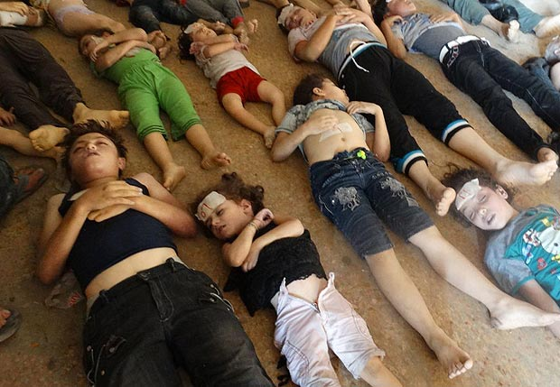 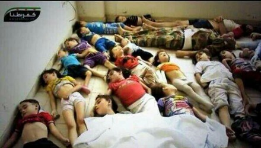 |
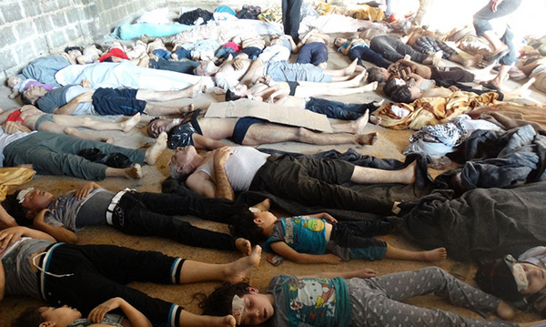 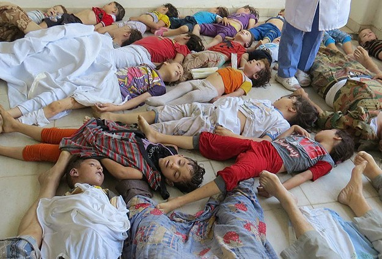 |
Pictures like these are all you ever see.
Obviously such images would stir up a lot of emotions... so what message where they really trying to get across?
And why is Washington showing such images and video footage to Congress before they vote? Especially since the UN ruled these as fabricated! This is a very low-brow attempt to morally justify one's decisions through emotion, rather than logic.
But now did the rebels logically have the means and the opportunity? Actually yes, they did.
On May 31st, 2013, security forces in Turkey found a 2 kg cylinder filled with sarin gas after searching the homes of Syrian militia.
On June 22nd, 2013, Israeli Intelligence News Agency called DEBKA, reported that the Syrian rebels were in possession of sarin nerve gas.
On July 7th, 2013, the Syrian army went public about a chemical lab they found belonging to rebels in the city of Banias. Suspiciously, some of the material's labels say that they were made in Saudi Arabia.
|
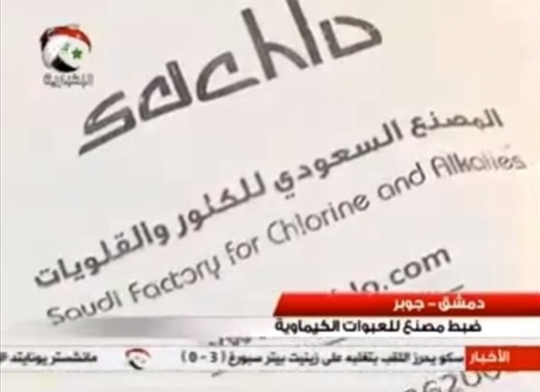 |
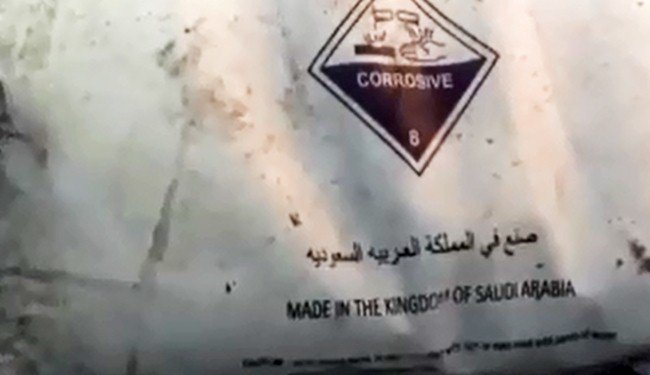 |
In terms of evidence, everything that has been released to the public so far points to the rebels being behind the attack.
If the US government has any real evidence to support their side of the story, why don't they produce it? Instead of the US saying that they have transcripts of conversations connecting the attack to Bashar Assad, actually releasing them to the public would be highly convincing. But then again it seems that the conversations they intercepted didn't even have any connection to Bashar Assad after all.
Hence the so called "Intel document" that they released on August 30th 2013, on WhiteHouse.gov, to justify their position doesn't contain any evidence at all. It's just a statement of opinion.
Even a dozen former US military and intelligence officials are telling Obama that they have doubts about Washington's "high confidence" of evidence. Some of which even talked about the possibility that rebels could have carried out the attack in "a callous and calculated attempt to draw the West into the war."
Why wasn't this suspicion included in the official intelligence report?
And yet in a recent interview on September 15th 2013, Obama said...
"Well, nobody around the world takes seriously the idea that the rebels were the perpetrators of this."
He is then informed that the evidence is widely documented and responds...
"Well, I understand. What I said is nobody around the world takes seriously the idea that the rebels perpetrated this attack."
Since it is a documented fact that most of the world is seriously thinking about the overwhelming evidence pointing to the rebels, Barack Obama's remark here can only be interpreted as a dictatorial instruction to adopt his mentality and not to exorcise your right to free independent thought.
It also seems as if President Obama has decided to completely ignore Russia's President, Vladimir Putin.
“Without the full picture of the events here [in Syria] we cannot but
call the nature of conclusions drawn by UN experts… as politicized,
biased and unilateral.” - Russian Deputy Foreign Minister, Sergei Ryabkov
What's scary is that John Kerry was even reported for saying Assad's guilt was "a judgement that is already clear to the world." However other mainstream media outlets are now disagreeing, while reporting that US evidence is nothing more than mere speculation and circumstantial at best.
In fact, the evidence was largely based off a report and analyse from Israeli surveillance unit 8200 (the US equivalent of the NSA). Israel of course is not exactly a non-involved actor in the region, especially since they also provide weapons to the so-called "Free Syrian Army."
Regardless of all this insanity let's pretend for a second that Syria's army, under Bashar Assad's orders, actually attacked its own citizens with sarin gas.
If Assad is guilty, then have him trialed as a war criminal. But don't bomb Syrians... it's entirely ridiculous to even contemplate such a thing.
The other problem is that congress should not even be able to decide whether a military action should take place or not! It's up to the UN Security Council, which has already voted against it (via Russia and China). And so right now, America's actions are grossly against International Law... and yet very few people are actually discussing this point.
Anyone that says America should attack Syria or any Congressman that votes to attack Syria, is and will be acting as a criminal!
Just as the United States feels it needs to maintain its "credibility" as a country, which now all of a sudden draws a red line against the use of chemical weapons... the United Nations will feel the need to uphold their credibility as well.
The reason why I say "now all of a sudden" is because one would have to completely forget about the US use of white phosphorous in Fallujah, Iraq in the mid-2000's which has caused a massive spike in cancer rates and birth deformities there; the US's use of depleted uranium in Yugoslavia in the 1990's; the US's use of napalm and agent orange during the American War on Vietnam; and the US's massive use of deadly defoliants in Colombia at the present time as part of its ostensible "war on drugs."
I guess credibility as a founding member of the UN, which was designed specifically in response to prevent the devastation the likes of WWII from happening again, is not even a factor worth considering.
Since this issue of so-called "credibility" happens to be the main argument people have now to attack Syria (without anything else happening), let's look at how mainstream comedy host, John Stewart on the Daily Show decided to address such absurdity...
"The grand deception is that we're doing this for national security, that is so bizarre. And at the same time we fight these wars, we bankrupt our country, we make more enemies, and we ignore the fact that we use drones to kill kids, and then we're going in there for some gas." - Ron Paul
Luckily 91% of Americans are against the attack, and even the UK's parliament (despite supporting every other recent US attack) was forced to decide against taking action based on this false propaganda. Perhaps they actually learned from Iraq, unlike Washington.
Even America's main European alley, France, is under increasing pressure to seek a UN mandate for any military action since up to 64% of French people oppose air strikes.
But it's not only the credibility of US alliance to the UN that is on the line here... US credibility with its very own constitution is on the line!
President Obama was forced to appeal to the public by going to congress for a vote. This way if and when things turn bad, the blame may be shared.
This is despite Arizona Senator John McCain's insane suggestion, that Obama should strike Syria now before congress can say otherwise and to ignore talks of impeachment: "They're not going to impeach the president. They're not that crazy."
Only problem is that Obama's administration has still made hints that they may follow through with an attack regardless of Congress's vote. This is a direct threat to the constitution, as it was specifically designed to prevent the Executive branch of government from going to war, since it knew that it would be the most likely.
It makes no sense why Obama's administration can't answer the simple question, "Will you respect Congress if we vote no?" Just listen to the response US Secretary of State, John Kerry, gives Ron Paul's son, Senator of Kentucky, Rand Paul...
Glenn Greenwald (an American journalist, political commentator) points out: "Recall how - in one of the most overlooked bad acts of the Obama administration - The House of Representatives actually voted, overwhelmingly, against authorizing the US war in Libya, and yet Obama simply ignored the vote and proceeded to prosecute the war anyway."
Click here to see a video of John Kerry making a bizarre excuse for Obama violating the War Powers Resolution when he continued the war on Libya without Congressional authorization by saying that it was the fault of Congress (both the House of Representatives and Senate) for not acting with a unified vote within 60 days to un-authorize the war.
In march of 2011, the UN Security Council voted to implement a "no-fly zone" over Libya to prevent it's government from using aerial attacks against it's citizens that were protesting. To everyone's surprise China and Russia didn't veto it, and instead abstained. But then the no-fly zone morphed into "let's overthrow Libya's President Muammar Gaddafi."
Interestingly, Russia and China's reasons for voting against military intervention in Syria are not being based on a special alliance with Syria, but because they don't want to see countries (America/NATO/Israel) jumping the gun and invading other countries... again.
Senator John McCain "the warmonger" decided to hold a town hall meeting in his home state of Arizona, allowing the people to finally express what they think in regards to Syria.
And then it just continues to get even worst...
8. Who Exactly are these so-called "Syrian Rebels?"
While the US, NATO, and Israeli governments openly support the Free Syrian Army fighting against the Syrian government, and the west tries to paint them as innocent local "freedom fighters" vs. a crazed totalitarian dictator... the reality is much different.
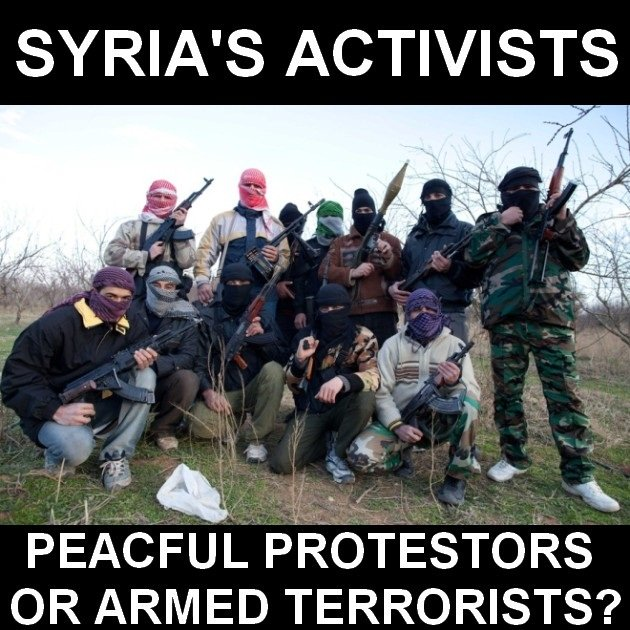
The conflict has attracted foreign Jihadist (in this case infamously violent, radical Islamic extremists groups) from multiple countries, many of whom openly declare their intent to replace Assad's secular (non-religious) government with Sharia law... the most barbaric and violent law that justifies brutally killing anyone that isn't Islam, mocks their prophet Muhammad, or doesn't follow other extremely literal interpretations from the Quran. (Note that Islam, and thus Muslims are not the problem... it's the extremist and fundamentalist view that separates people, regardless of the religion, instead of unite.)
So the US (via McCain, etc.) was aiding the rebels through Benghazi, Libya in 2011. After that, the us had problems giving aid to the rebels. So all of a sudden, there's a chemical attack, which gives reasons to arm and aid the fundamentalist groups again. Isn't that something?
Conveniently, it was also reported that conventional weapons and even chemical weapons in Libya went missing according to the UN. And you bet it's believed to have fallen into the hands of Al Qaeda and other militant fundamentalist groups.
Not to mention, CNN and other news agencies were reporting a few months prior to this event that the US was leading training of Syrian Jihadists in Jordan and Turkey.
But wait, let's back up a bit... the strongest force fighting alongside the rebels is the group, Jabhat al-Nusra, which in fact is an Al Qaeda affiliated group! Which is the same group that was also in control of the area in Damascus when the chemical attack went off on August 21st, 2013.
So now you mean to tell me that America (via the CIA) has been funding and sending weapons over to rebels (plus "$15 million for medical supplies and communication equipment") that now secretly includes the same extremist religious sect that caused 9/11??? In a word, yes. Did this slow down US support? Not a bit.
How does one reconcile the fact that the US government is still at war fighting Islamic extremist groups in Afghanistan calling them terrorists (literally destroying their country because of it for over 30 years now, killing whole generations), while supporting those same groups in Syria calling them freedom fighters?
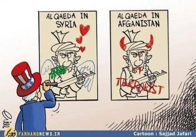
Obama once said he wanted to protect US allies in the Middle East from Syria (namely Israel), but someone might have to explain to me again how the heck is Syria's government a threat to Israel (or any other surrounding country), while it's defending its country against foreign terrorists?
A leaked internal memo shows how Saudi Arabian officials commuted 1,200 death row inmates under the condition they go and fight against Assad in Syria alongside the rebel groups, according to the Assyrian International News Agency.
How could Saudi Arabia send Muslims to go and fight against another Muslim?
That's because Bashar Assad is an Alawite (this sect. was in command since the 1970's in Syria).
Saudi Arabia's government officials are strictly Sunnis that practice Sharia Law. They would never allow a government like Syria's with a mixture of Sunnis, Christians, Shiites, and Druzes all working together.
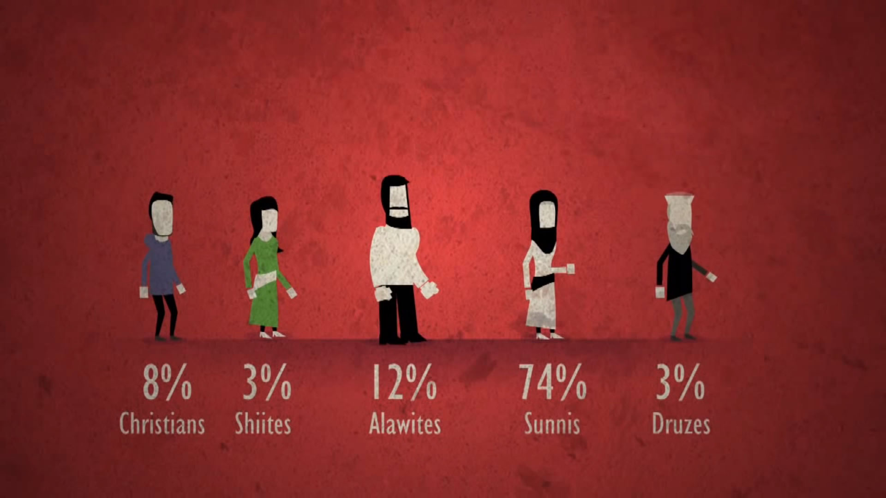
So the US, NATO, and Israel are arming criminals, killers, and terrorists.
If it's not bad enough that many of the "Syrian rebels" aren't even Syrian, numerous mainstream reports are already surfacing of Sharia motivated atrocities being committed by the rebels. This includes: recruiting a 14 year old boy and having him take part in beheading two government soldiers, shooting women, killing Christians, killing Muslims (since a large portion of the rebels are also not even Muslim), raping women as long as they're 14 years of age, and kidnapping / murdering UN humanitarian aid.
Yes that's right, you would think that at least the death of the 11 UN humanitarians would have made it onto the mainstream news... but then again that would make America, Israel, and NATO look really bad for funding these same groups.
Not only that, but a rebel commander from the Farouq Brigade reported that 2,000 Farouq fighters had been killed in Homs province since August 2011. In other words, the "rebels" are highly unstable and are even fighting among themselves.
Yet the US government isn't deterred by such details.
They still want these extremists to topple the Syrian government.
In fact, secret services the likes of the CIA (America), M16 (UK), and Mossad (Israel) have gone through quite some trouble to obscure the so-called "Syrian rebel's" source of support.
US, NATO, and Israeli allies in the Middle East (namely Qatar and Saudi Arabia) have been used to purchase weapons and then route them to Syria via Turkey. And they thought no one would ever notice. In July 2012, it was estimated that those three Middle East countries donated $50 billion to arm rebels in Syria. Two years earlier in 2010, Barack Obama authorized the largest sale of arms in US history to Saudi Arabia, $60 billion. But wait, Saudia Arabia was never officially at war with anyone, so why would they need that much weaponry?
Not to mention that the US is sending billions of dollars to Egypt to supply their government with tanks and jets. What the heck are we doing?
And funny isn't it how they require FBI background checks to buy a deer hunting rifle in America... but if you're a foreign Jihadist trying to overthrow a government that Washington and Wall Street isn't on good terms with, they'll send you rocket launchers and heavy artillery no questions asked.
|
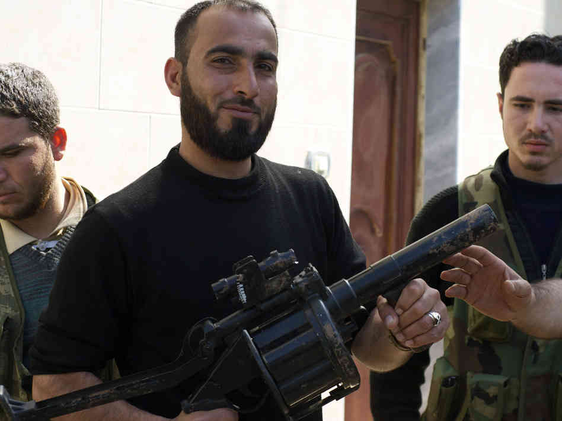 |
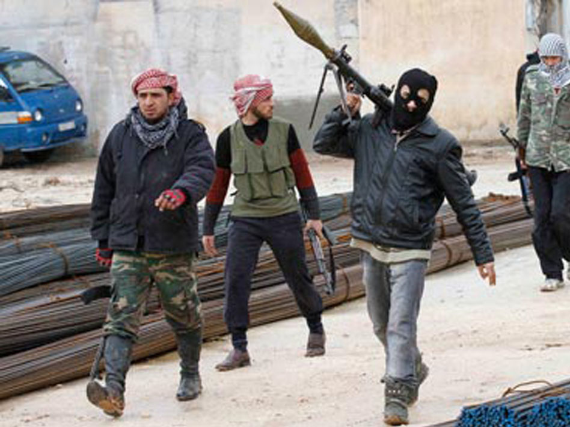 |
We want to give them guns, yet take guns away from our own citizens. How can someone do both?
Not to mention that China has killed more people, through their one child law, than Syria could ever kill. And yet the US has never sent a threat or advised warning to them.
Now let's call a spade a spade. The US, NATO, and Israel have initiated a proxy war against Syria's government, by arming and funding foreign mercenaries to pose as Syrians protesting for Democracy.
What they have done is simply taken advantage of pre-existing political turmoil in a relatively peaceful country, void of any major religious conflict or strife in the past, and with a low-crime rate, to indirectly and covertly carry out their hidden agenda (which we'll discuss later).
In fact, Syria may just be considered the "last secular and tolerant country left in the middle east."
Yet, it is still true that many Syrian citizens are opposed to their current form of government for a number of reasons, but namely:
"the concentration of wealth in the hands of autocrats in power for decades, insufficient transparency of its redistribution, corruption, and especially the refusal of the youth to accept the status quo." - Wikipedia. (in other words, the rich became richer and the poor became poorer)
These people sought to accomplish their goal of political reform via peaceful resistance and activism. The main reason their protests have turned into an all out civil war, violently fighting over the capture of key strategic cities (which would normally be beyond the scope of ordinary civilians), is entirely due to armed foreign terrorists coming into their country.
For example, rebels coming from Turkey took control over the Tabqa dam on the Euphrates river, which is the largest hydroelectric dam in Syria and provides electricity to many areas, including Aleppo. Also, rebels took over the strategic town of Al-Qusayr, which is situated in a mountainous area overlooking Syria's border with Lebanon. This helps the rebels prevent Hezzbolah from helping the Syrian government in the battle.
Hezbollah was founded in southern Lebanon in 1985 (officially) as Shia Militants opposed to the state of Israel and western influence in the Middle East. 70%-90% of their funding comes from Iran and currently it's believed 2,000-4,000 are fighting alongside Assad's forces in Syria. Iran and Hezbollah are two of the three biggest allies of Assad (although Hezbollah and Syria don't officially have a mutual defense agreement, but just share common enemies currently), while also being two of the biggest enemies of Israel.
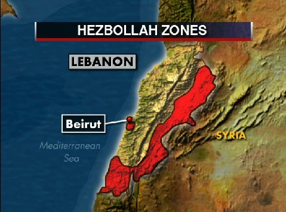
And in fact, after the first cities began falling under the rebellion's control, the following warning was given...
On January 10, 2012, the President of Syria, Bashar Assad, gave a speech, in which he blamed the uprising on "foreigners," and said that it would require the co-operation of all Syrians, in order to stop the rebels.
In another interview, he again insisted his regime is fighting against foreign mercenaries who want to overthrow him and not innocent Syrians aspiring for democracy.
“They (foreign mercenaries) are being detained and we are preparing to show them to the world.”
Assad also cautioned against meddling in Syria, warning neighboring nations that have served as transit points for weapons being smuggled into the country that “if you sow chaos in Syria you may be infected by it yourself.”
Surprisingly, despite what US mainstream media has to say, is that many Syrian citizens either look past Bashar Assad as being the root of the problem (rightfully blaming the entirety of the corrupt system) or in fact still outright support the man.
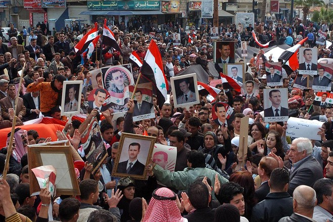
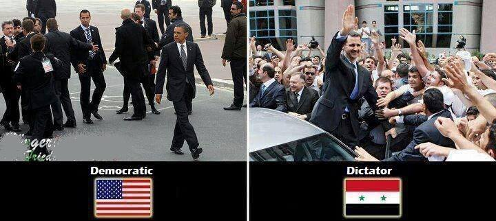
If the US government wants to talk about dictators, what happened to ever talking about the biggest of dictators they support like Saudi Arabia (where their King has been in power for almost ten years now), Bahrain, Jordan, and Iraq's Saddam Hussein when they installed him, and many other genocidal dictators like Chile's Augusto Pinochet!
But now remember, America is doing all of this to spread democracy and freedom, to protect human rights... with 50 caliber machine guns and drone strikes. I mean just take a look at all the places we've helped so far...
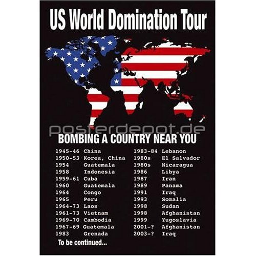
They're all much better off now, right?
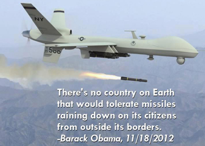
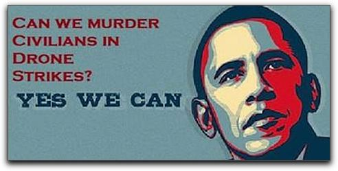
Mind you, the US Drone War on Yemen violates International Law
None of this makes any sense at all if you take the US government's propaganda (via CNN, ABC, NBC, CBS, FOX, Yahoo, BBC) at face value.
But it starts to make all the sense in the world when you learn what's really going on here. (Note that Reuters and Aljazeera English are far more neutral international sources.)
So why are we really pushing so hard to attack the Syrian Government?
It's time we get to the bottom of this war now...
7. Why Syria?
This isn't really surprising to anyone who's been paying attention lately. America has had Syria in their cross hairs for a long time now... for over 10 years. Below is a special interview taken on March 2, 2007 of the retired 4 Star US General Wesley Clark by "Democracy Now!"
What's important to remember is that the main target is not Syria... it's Iran. The two countries have a mutual defense agreement, so once Syria goes to war, Iran will be forced to follow.
6. The formula to start War
The "powers that be" have 3 main psychological techniques to get the public to agree to War.
1. Create the impression that the the aggressor country is acting in self-defense or in more recent times, defending a helpless nation. The point is to never be seen as publicly taking the first step towards starting war. So instead the US must either exaggerate or outright lie about the danger posed by an enemy (claim towards WMD), covertly attack ourselves or the country we're to defend while blaming the enemy (false flag), or intentionally provoke the enemy into a response.
2. Build up a dialogue that the aggressor country is fighting towards a higher ideal to unite the masses. In recent years this would be known as "Spreading Democracy," or "Fighting Terrorism," or "Defending Human Rights." By protecting the small defenseless Syrian civilians against their criminally insane dictatorship government.
3. De-humanize the enemy so your citizens and soldiers don't question the morality of their actions. This pattern is often artificially supported by a sense of cultural or racial superiority. In fact, it would easy for a number of Americans to imagine this since Hollywood has constantly portrayed Muslims as the "bad guys" in major movies and TV shows since its inception. But that's a topic for another day. Islamophobia has the goal to build moral support for this phony war on terror.
Now let's look at the facts. The US government has a long illustrious history of using these same techniques over and over again for the simple fact that they work...
Keep in mind the person speaking in Washington (September 21, 2012) is Patrick Clawson, a leading pro-Israel (Zionist, Neocon) lobbyist. He's an american economist and Middle East scholar (funny how the two go hand and hand).
|
Battle of Fort Sumter (4/12–14/1861) 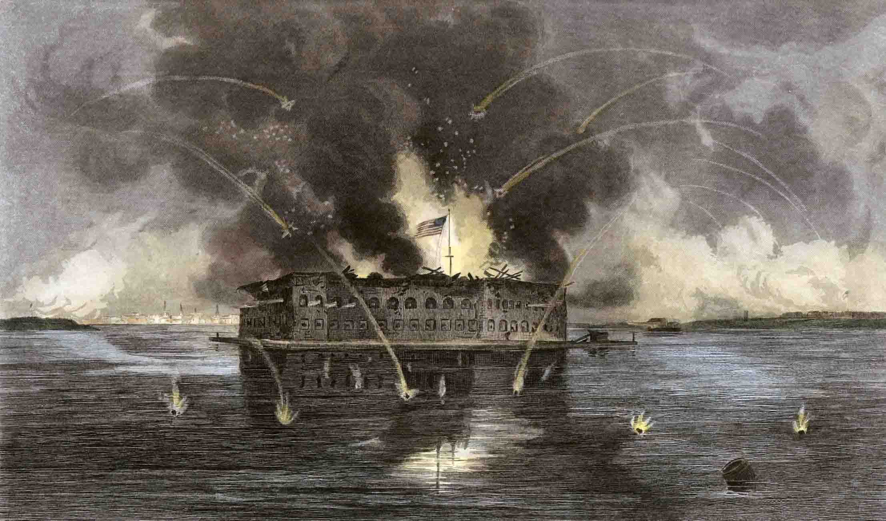 USS Maine explosion (2/15/1898) 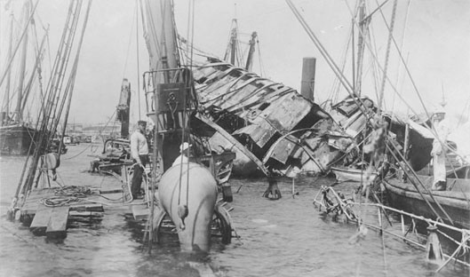 Lusitania (5/7/1915) 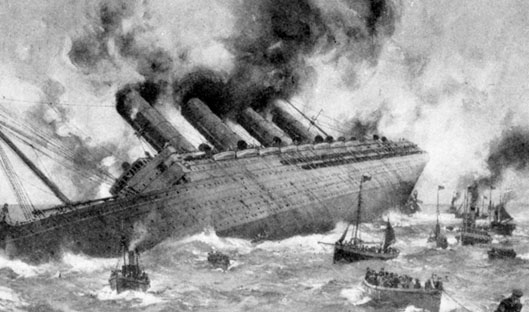 |
Lincoln and American Civil War (1861-1865) 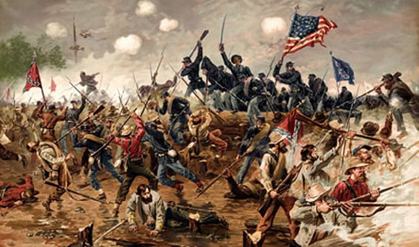 McKinley and Spanish-American War (1898) 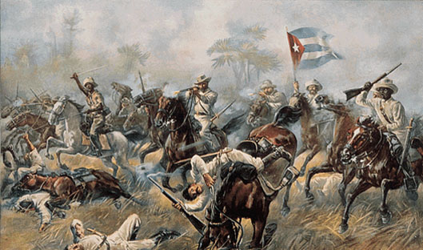 Wilson and World War I (1914-1918) 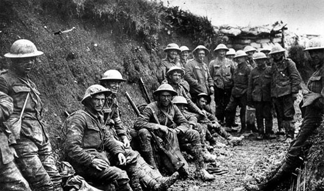 |
|
Pearl Harbor (12/7/1941) 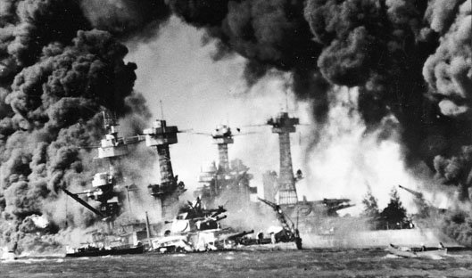 Gulf of Tonkin (8/4/1964) 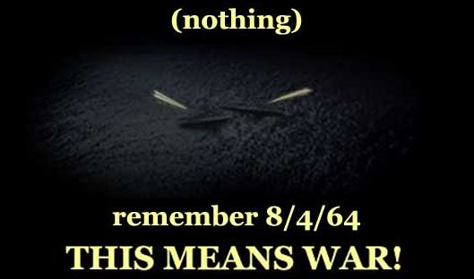 |
Roosevelt and World War II (1939-1945) Johnson and Vietnam (1955-1975) 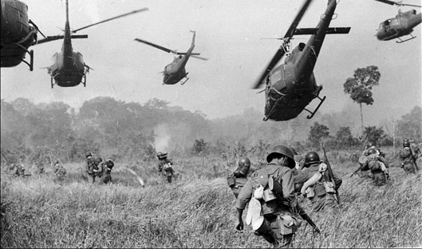 |
|
Twin Towers Attack (9/11/2001) 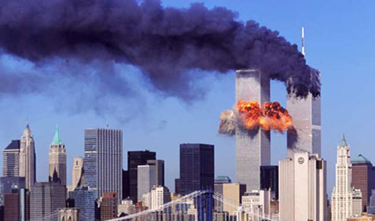 Weapons of Mass Destruction (2003) 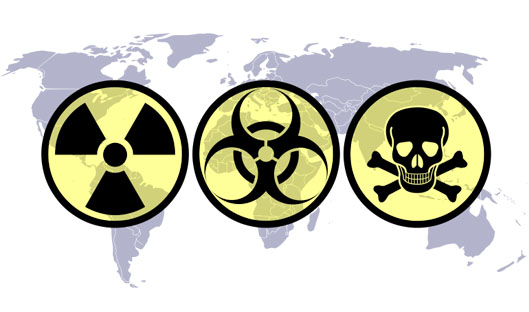 Chemical Weapons (3/19/2013... 9/21/2013) 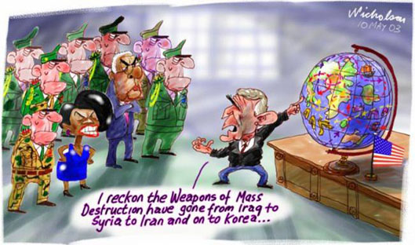 |
Bush and Afghanistan War (2001-present) 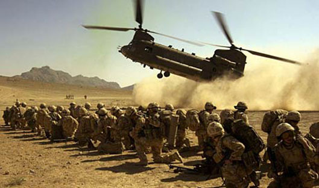 Bush and Iraq War (2003-2011) 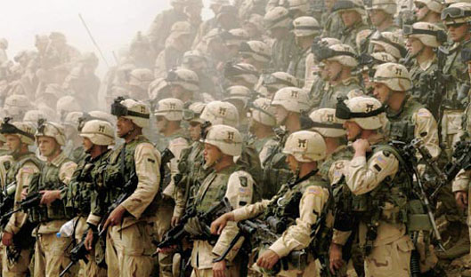 Obama and Syria / Iran / World War III? 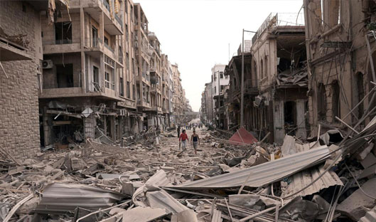 |
Sure are a lot of countries throughout history that kept trying to mess with America. Good to know that we've never done anything like that to others, or it'd surely be written in our history books as lessons to be learned from, right?
In reality, the US has been trying to get Iran under it's thumb for a long time, despite the fact that it hasn't attack any country since 1798.
In 1953, the US's CIA and UK's MI6 organized a highly risky coup to topple the democratically elected prime minister of Iran, Mohammad Mossadegh. Why? Because he committed to nationalizing the Iranian petroleum industry (via unanimously vote from their parliament), which was being controlled by the Anglo-Persian Oil Company (a pillar of Britain's economy).
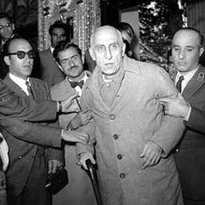
They then installed the Shah (title given to the emperors/kings/lords of Iran and India), Mohammad Reza Pahlavi, as their puppet. Only problem was that he turned out to become a brutal dictator, and so he only ruled until 1979, when he was finally overthrown by the Iranian revolution (via Shia Muslims).
(It's important to note that unlike the Shia Muslims, Sunni Muslims are far more disposed to the "the powers that be" of the west. Look at the corrupt Saudi Royal Family. Look at the luxury shopping malls and opulent hotels in countries like Dubai.)
But of course the US didn't like that. You see America's survival at this point has become entirely dependent upon having someone in charge over there that's going to work in the interests of America / NATO / Israel.
So the "powers that be" decided to take Iran down again, but this time by using a less direct approach. They decided to take advantage of the Iranian-Iraq war, also referred to as the first Persian Gulf War from 1980-1988, by arming and funding Iraq's president at the time, Saddam Hussein, so he could defeat the Iranian government. (Mind you that Shia Iraqis tried to overthrow Saddam Hussein (a Sunni Muslim), but were betrayed by the west.)
The US continued its support for Iraq even after they knew full well that Saddam (which the US/CIA helped install in 1963) was using chemical weapons to kill the Iranians (killing more than we even see today in Syria), which were evidently purchased from the US as well (via Rumsfeld, Henry Kissinger, etc.).
Apparently it was more important to the US government to take down Iran's government, than protecting human rights... as it is today.
To illustrate this point, take a look at this video of the infamous Donald Rumsfeld (then special envoy of president Ronald Reagan) meeting Saddam on December 20th, 1983... after the date of the first disclosed CIA memo acknowledging that America knew of their chemical attacks.
Flash forward a bit and history tells us that Saddam failed to defeat Iran, so the US decided to switch tactics.
In 2008 the US tried to go after Iran directly by accusing them of building nuclear weapons in order to justify military strikes.
However, the US government had already lost most of its credibility in their trumped up claims about Iraq's "Weapons of Mass Destruction."
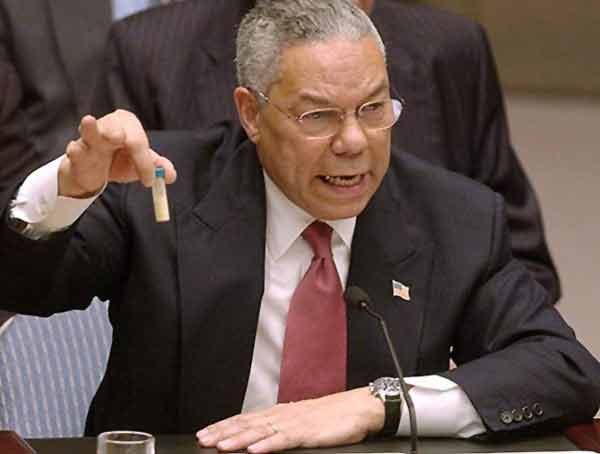
Not to mention that the CIA and Mossad came forward stating that there was no evidence that Iran even intended to build such a weapon.
Not to be deterred by little details like the truth... they decided to go after Syria to get to Iran. They knew that Syria and Iran have a mutual defense agreement and if NATO forces get a reason to enter Syria, Iran will be drawn into the fight.
Then the little deranged psychopaths in suits will get their war.
(Don't forget that the US military suicide rate post-war is higher than the actual US combat causalities during the war. Lives destroyed in mind and body only to serve to line the pockets of un-elected and un-accountable cartels of bankers and corporations.)
But it's all about consistently maintaining appearances.
This pattern of arming and funding dictators or extremist groups to take down non-cooperative governments has been a key element in America's foreign policy ever since the creation of the CIA after World War II.
Hmm... maybe that's why nearly every country hates the American government.
By the same token, the Afghani insurgents - the future Taliban - and Osama bin Laden (Sunni Muslim / former CIA agent Tim Osman) were allies of America during the Soviet occupation of Afghanistan.
But let's not just talk about this in a general sense. Who was running many of these operations from behind the American public's view?
US National Security Advisor Zbigniew Brzezinski... just had to throw in the oldest trick in the book of using religion to get others to kill each other. Real original.
Real swell fellow, good thing he's acknowledged as an esteemed friend and mentor to our President, Barack Obama.
And yes this is also the same guy that said this...
“In earlier times, it was easier to control a million people, literally it was easier to control a million people than physically to kill a million people. Today, it is infinitely easier to kill a million people than to control a million people. It is easier to kill than to control…”
History proves that these dictators and extremists that the US government installs are readily disposable, and the very qualities that once made them useful against enemies are later used to demonize them and justify killing them without trail.
This should be taken as a warning to those rebel groups that the US, Israel, and NATO are using to destabilize Syria right now.
Obama must have as well picked up a thing or two from Brzezinski, since now he totes around his "Kill List." So don't except any sympathy.
5. Who is this war really between?
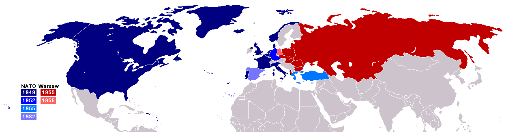
|
NATO (North Atlantic Treaty Organization) and Israel 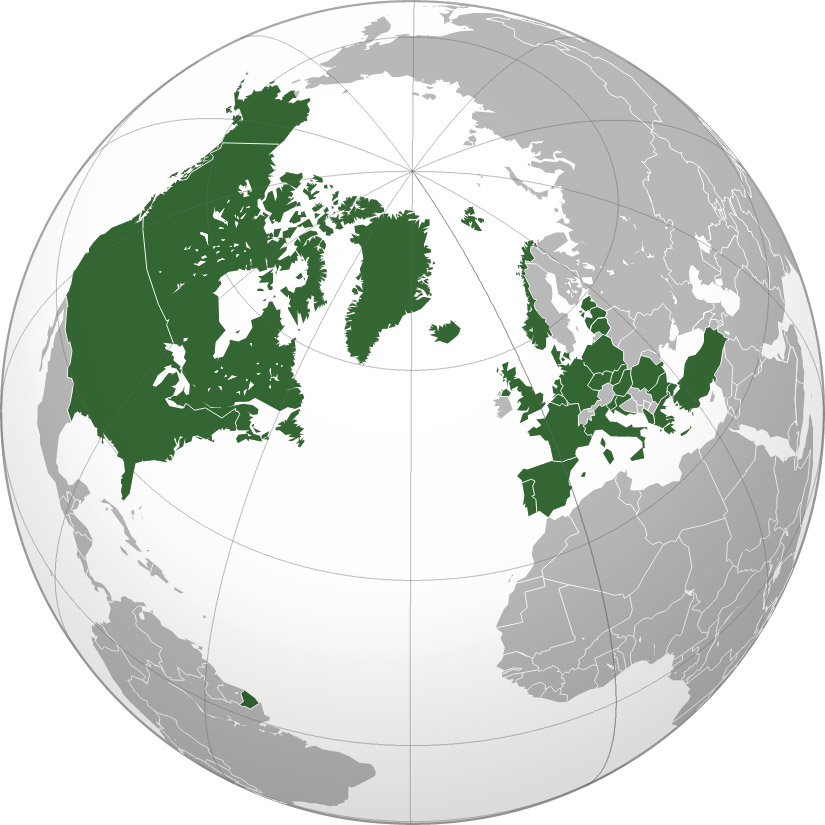 (Select Middle East Allies, plus South Korea) |
League of Arab States 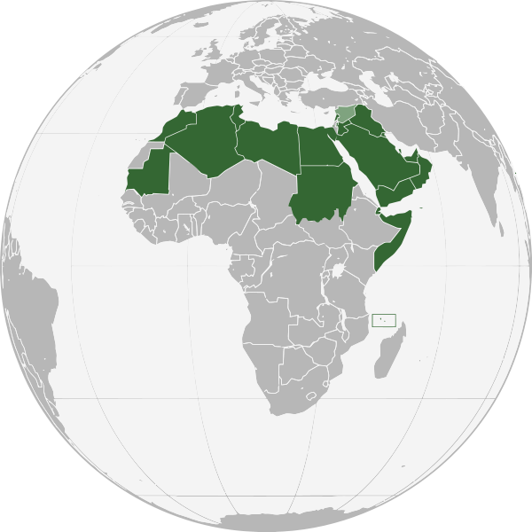 OPEC (Organization of the Petroleum Exporting Countries) |
BRICS (Brazil, Russia, India, China, and South Africa) 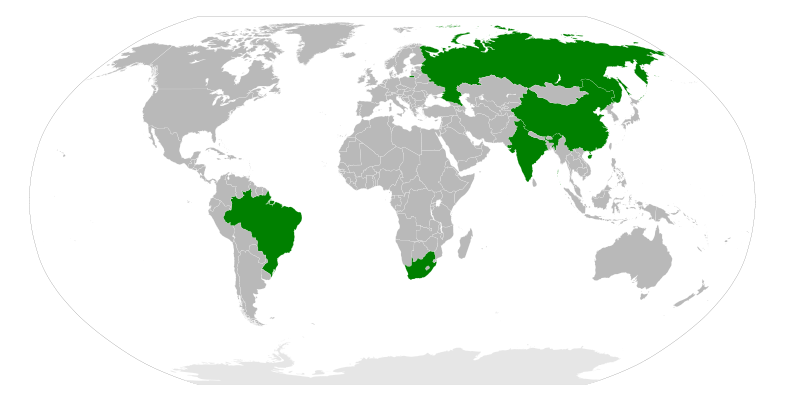 As well as North Korea |
What's interesting is that the "poorer" countries now are growing and are set to surpass the former "power nations." The only thing preventing them? Oil. That's where the Middle East comes in.
You may also equally argue that this war is between the Old World Order (false democracy, capitalism, free markets) vs. Shia Muslims from Iran, etc. (greedy instant gratification vs. tradition) Again, unlike Sunni Muslims found in Saudi Arabia, etc. that are much more susceptible to the web of earthly vanities.
4. The Pipeline Monopoly
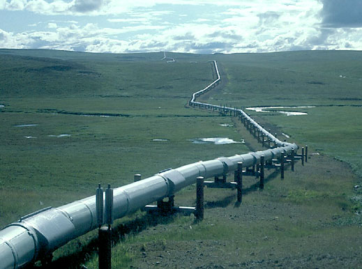
Pipelines are not just used for transporting oil and gas... they are for political leverage as well.
Each country a pipeline passes through greatly benefits as a middle man in the flow of resources. In order for energy to reach the open market, the pipeline must reach a port. After that, they can be shipped anywhere in the world.
The major battle right now is over the Caspian Basin. It's a non-OPEC source for oil and gas, and there's a lot of it.
The major markets are Europe and Asia. The larger market, and undoubtedly the larger future market, is Asia with China (expected to be the largest consumer before 2020), India, and even Japan.
Ideally, there would be a direct pipeline leading to China and India, but due to the conflict in Afghanistan (via the US) no one is willing to risk building it, and it gets blown up.
Instead, currently oil and gas going to Asia is shipped west through the BTC pipeline that ends in a port in Turkey leading to the Mediterranean Sea.
From here, it must travel south and enter the Israeli pipeline, which then exits in a port leading to the Red Sea.
Israel greatly enjoys its position as a final middleman on the energy going to Asia.
After the Egyptian Revolution, when the puppet dictator Mubarek was forced to flee to Israel in 2011, Iran was free for the first time since 1979 to pass its ships through the Suez Canal to send gas to Europe.
Likewise, Libya could send its oil southeast to Asia.
However shorty after this, existing tensions in Libya were purposely made violent, which allowed it to be invaded by the US. This lead to having Gadafi removed and his contracts with China destroyed.
Europe was also bullied into putting numerous sanctions on Iran that have wreaked havoc on its economy ever since.
Despite this, Iran has been expanding its gas fields and would like to send gas that's located in southern Iran (avoiding Afghanistan) through Pakistan, reaching India and eventually China.
At minimum this pipeline is going to happen, so keep looking for more excuses for America to bomb in Pakistan with drones (like its currently doing with Afghanistan).
China has made it very clear that they're willing to overpay for gas and oil.
At the same time, with the US being kicked out of Iraq in 2011, Iran signed a 10 billion dollar deal with Iraq and Syria to build a pipeline that would enable easier access to the European market.
But who is that a threat to?
Turkey and Israel naturally, because it is another possible alternative to the BTC pipeline monopoly.
So who has had mercenaries in Syria from the beginning? Israel and Turkey of course.
The goal is not really regime change in Syria, but like in Afghanistan, it's to create a prolonged conflict to last for years to prevent any new pipeline from being built.
As well, it also creates huge profits for the Macquarie Infrastructure Company (MIC).
Makes sense that such corporations would lobby to the US government, just look at their military spending habits vs. the rest of the world...
In return, Turkey and Israel will continue to buy all of the United State's weapons with the US dollars they acquire from the US to begin with, through the form of International aid (notice who the largest recipients are). The dollar ends up going right back to where it came from, into the same pockets of the same super-rich elites.
As mentioned earlier, everyone admits now that they know Iran isn't even attempting to build nuclear bombs. But the worry is that if Iran can build nuclear power for electricity, it could free up all the oil they currently consume and sell it, taking demand away from the BTC monopoly.
Indeed, currently there's a proxy war waged by the US and Israel against Iranian nuclear facilities and scientists in which bombings, sabotage, cyber attacks, support for and training of terrorists, and targeted assassinations of Iranian scientists have frequently occurred.
PNAC (Project for the New American Century), an American think tank based in Washington, D.C., goal is to destroy any economic and political rivals by any means necessary.
If you can understand how these pipelines keep the US economy in tact for now, and the Israeli central grip over US and NATO foreign policy... everything begins to make perfect sense.
At the same time, we have to understand that the American government is not fully acting in the interests of its citizens (which should already be obvious), but on the behalf of "others' interests."
Who are these others, you ask? Who exactly is it that dictates US foreign policy? (Mind you, the main reason people from other countries hate America is due specifically to its foreign policy... as well as its alliance with Israel.)
3. Who High-Jacked America?
AIPAC is a lobbying group that advocates pro-Israel policies to the Congress and Executive Branch of the United States. In other words, the Israeli government has literally purchased the US government from right under our noses... and no this isn't an exaggeration.
In fact, 250 lobbyists were said to have meet with their senators and representatives in Washington to gain Congressional support for military action in Syria.
A majority of Obama's administration does in fact openly agree with Neoconservatism (Neocon), a political movement born from the American Jewish Committee. But what does it mean to be a Neocon? It unites under three common themes:
1. Analyze international issues in black-and-white, absolute moral categories. They are fortified by a conviction that they alone hold the moral high ground (remember the traditional Jewish identity is defined by being, "God's Chosen People") and argue that disagreement is tantamount to defeatism. (So if you don't want to jump the gun and attack someone first, then you allow them to attack you... in which case doesn't describe you as being logical and reasonable, but as being "scared to take action." Such a world view would really help explain the supreme arrogance derived in this blatant lie seen here.)
2. Focus on the "unipolar" power of the United States, seeing the use of military force as the first, not the last, option of foreign policy. They repudiate (strongly disagree with) the "lessons of Vietnam," which they interpret as undermining American will toward the use of force, and embrace the "lessons of Munich," interpreted as establishing the virtues of preemptive military action (that simply means strike first, "discover" evidence later).
3. Disdain (ignore) conventional diplomatic agencies such as the State Department and conventional country-specific, realist, and pragmatic, analysis (in other words, ignore UN and any other investigation teams searching for evidence before an attack). They are hostile toward nonmilitary multilateral institutions and instinctively antagonistic toward international treaties and agreements. (Maybe this is why Israel signed an agreement to form a truce with Palestine in 1994, but then continued to block the borders of Gaza, preventing enough food and medicine from entering. Then when a population of 1.5 million were either starving to death or dying from simple diseases like the flu, Palestinians tried to open the borders by desperately firing homemade rockets (all they got), which caused one Arab Israeli to die. Israeli response in 2008 was a series of heavy air strikes, killing more than 660 and injuring over 2,900 in a week, largely civilians. Israel even went as far as attacking International aid boats trying to rescue injured people in Gaza. Meanwhile, the US blocks a Security Council resolution draft that calls for immediate ceasefire.) "Global unilateralism" is their watchword. They are fortified by international criticism, believing that it confirms American virtue. (this means cover your ears, and know your actions are the best for humanity... this would also explain the common practice of calling someone "anti-Semitic" when you try to point out Israel's crimes. Although it obviously has nothing to do with the people/citizens, but the criminally insane governmental structure. At the same time, of course racism, prejudices, etc. is one of the absolute worst diseases of the human condition).
Aside from what's in parenthesis, the text above is taken straight from Wikipedia. (while Israel may be forced to take an "attack first" approach now, both sides aren't "right" since killing is being justified by religion on both sides... this is the opposite of what religion was meant to stand for)
But now aside from pro-Israel lobbyists controlling Washington (military capital of America/the world)... is there any other way the US government has been high-jacked?
Most people already understand that Democracy and voting in America has become a joke. Different people get elected, while the same policies and agendas gets carried out.
It has actually been this way since December 23, 1913, with the enactment of the Federal Reserve Act, forfeiting the US government's right to be in charge of its own economy. Hence today the un-elected and un-accountable free-market is what truly rules the world. Wall Street dictates to Washington.
Is it rational for dynastic families – such as the Rothschilds – to be able to use their incredible wealth and power to dictate the shape of the world generation after generation, and always in their own favour?
(Why did Israel attack Syria... twice?)
After chemical attack US-Isreal ally Jordan forces (250 at first) come in to take over Syrian towns.
Ms Del Ponte's allegations concerning the use of sarin by rebels came after Israel carried out a series of air strikes on Syrian military targets early on Sunday.
“Israel, whether intentionally or not, has made itself a perceived ally of the Syrian rebels”
Haaretz newspaper, Israel
Regional press worry at Israeli strikes
The Israeli government made no official comment, but security sources said the strikes were aimed at preventing the transfer of advanced Iranian-made missiles to Lebanon's Shia Islamist movement, Hezbollah."
The Syrian government said the Jamraya military research centre, north-west of Damascus, was hit.
A later statement gave more details, saying military positions in the Jamraya area were struck along with other facilities at Maysaloun, near the Lebanese border, and a military airport at Dimass.
The statement said there was massive damage at those locations and nearby civilian areas with many people killed or injured. It also denied that the targets had included missiles for Hezbollah.
Syrian Deputy Foreign Minister Faisal Miqdad said the Israeli air strikes amounted to a "declaration of war" and threatened retaliation.
The New York Times quotes an unnamed senior Syrian official as saying dozens of elite troops stationed near the presidential palace had been killed. The AFP news agency quoted the Syrian Observatory for Human Rights, a UK-based activist group, as saying 42 soldiers had died and another 100 were unaccounted for.
Images on state TV showed large areas of rubble with many buildings destroyed or badly damaged.)
And keep in mind, the Israeli High Court (equivalent to the US Supreme Court) was completely funded by the Rothschilds. This enormous complex was a donation by Dorothy de Rothschild in 1992. It of course is not made public how much the actually building cost was.
So what would something like this tell us? It might begin to explain how such a small country, the size of New Jersey, could have so much influence over the world.
It's a fact that the Rothschilds (along with many other elite dynastic Zionist families) founded the central banks and the World Bank. It all goes back to who's in charge of major banks and corporations. And you can be sure that they heavy profit from both the public and private military industrial complexes. So war is simply "doing business" for them.
But don't be mistaken, while it's true a good percentage of the super rich are Ashkenazi Jews (descended from a German bloodline, largest ethnic group of Jews today), or have ties to Judaism, the other part of the equation comes from WASP (White Anglo-Saxon Protestant Christians). These two cultures hold the monopoly over the current world, and all because they practice the most dangerous thing of all time... passing on an un-fair advance of power and wealth to their children and friends, regardless of merit. WASP's primarily grew to the top and stayed there via freemasonry... their secret society at it's highest levels has without a doubt become corrupt with people giving highly influentially jobs over to people "they know" before someone that actually deserves the position. Is this fair that others should suffer? Whether you have the merit or not doesn't matter, as long as you were born to the right family and made the right friends you're guaranteed a successful life. In fact, a study showed that children that had poor grades in middle school had a slihgly better chance of graduating from college in the US, then children with excellent grades from poor families. This is MADNESS! And these people, even if they're completely incompetent, will dictate how the rest of us live. Just look at the Skull and Bones Father, Son dual of former US presidents, Bush Jr. and senior. The odds that out of 317 million US citizens, a father and son would become president is incredibly unlikely... not to mention when the father already proved to be incompetent.
Also look at it this way, when I say Ford, you probably imagine Henry Ford. He was talented and worked hard to build his dynasty, and thus earned it... but now can you name me another Ford family member? And yet you can be sure his family still has a considerable influence on the public domain. Equality doesn't exist when "who you know" matters more than "what you know."
The individual super rich people aren't to blame as much as it is the idea and structure that trancscends any temporary human life. Each super rich person is just the embodiment of the true root of the problem... and the problem again is one of privillage over merit.
And yet, these are just people... they're not "gods" given "divine right" to rule over us.
 |
But now the question is how far would these people go to stay on top?
On march 19th, 2013 sarin gas was used in Syria near Aleppo. This was meant to become the catalyst event that would mark the start of the Syrian strikes/war.
Extremely weird side note: Military strikes on Libya in 2011 and the Iraq war in 2003 also coincidentally began on March 19. What is the significance behind March 19? It's the birthday of Minerva... the Roman Goddess of War (in Greek mythology Athena) as well as wisdom and craft in Etruscan (present day Italy) mythology. An Estruscan also accurately predicted the fall of Rome's Emperor, Julius Caesar, stating the idiom "Beware the Ides of March." He was then assassinated on March 15, 44 BC.
The thing about Minerva's birthday is that it's based on the ancient Middle Eastern calendar, which followed the moon's cycle. Today, our western-calendar follows the sun, so each year the date changes slightly on our calendar. A quick Google search however will reveal a curious amount of other militant events starting on her birthday. Another way of looking at this, is that the date is near the start of the spring equinox (March 20th) and so warriors/soldiers didn't have to worry about freezing to death while in foreign territories attacking their enemies if the battle drew out longer.
Still since ancient times, this time of year was believed to bring special luck and strength to those who conspired to attack their perceived enemies. Thus, we see a pattern form out of tradition.
Now here is where it gets even more strange. Minerva's birthday also marks the Holy day of Purim in Jewish culture, which celebrates their victory over Ancient Babylon (Persia, led by King Xerxes I). The root-word "Pur" actually meaning, "astrological forecasting."
And during this time, some 75,000 Persians were killed 2,400 years ago, because they were plotting to commit genocide against the Jews. Babylon/Persia is now based within the borders of Iraq/Iran. What is also significant is that the previous U.S. led invasion of Iraq ended on the Day of Purim (1991) with the massacre of 150,000 fleeing Iraqis under George H. W. Bush. This was the so-called "Highway of Death." Also in 1994 on Purim, Baruch Goldstein, a US borne citizen living in Israel massacred 29 Palestinian Arabs and wounded over 100 in a mosque in Hebron, a Palestinian city located in the southern West Bank near Jerusalem.
Think this all sounds just a little too "far out there." Then please click here to see how Israel's Prime Minister Benjamin Netanyahu visited Washington to meet with US President Barack Obama on March 5th, 2012 (2 days after Minerva's brother's birthday, Aries/Mars (War God), and 2 days before Minerva's birthday / Purim) and received a gift from Obama, a copy of the Book of Esther which tells the story of Purim. Israel's Prime Minister then took the opportunity to draw a scriptural parallel between Israel's face-off with Iran and Purim. A conversation that was said to last about "3 hours" at the end of their meeting.
It's a tradition to wear a costume or mask on Purim... "Our masquerading commemorates the fact that the miracle of Purim was not blatant, but rather hidden and masqueraded in natural events. In fact the name of the Purim heroine is Esther, which comes from the Hebrew word which means hidden."
While Minerva was the Goddess of War, she was only the defensive side of it, not offensive. This might be interesting, considering the fact that the US and Israeli governments are known for feigning "defense" to gain public support.
In this sense, it may be seen as keeping Fascism (represented by a bundle of sticks wrapped around an axe) alive and strong with the same family lines remaining in power from the Roman Empire to America. Today it's a common symbol within the *highest levels* of Freemasonry, the US government, US military, and US educational systems, along with her owl.
|
"The Minerva Research Initiative was announced in 2008 by Secretary of Defense Robert M. Gates. Minerva looks to tap into the community of area specialists and other university researchers, particularly those who work on Islam, Iraq, (terrorism), China, and related areas." - Wikipedia Medal of Honor, the highest award within the 3 brances of military |
Minerva waving to New York Coin design during the French Revolution (notice the fasces and square) |
Minerva right before being placed ontop of the US Capital Building Painting on interior of dome of the US Capital Building, pointing to the invention of an electric generator (notices the fasces overhead) Former Speaker of the US House of Representatives, Nancy Pelosi State University of New York at Albany |
2. The US "PetroDollar" Scam
In 1945 (after World War II), the Bretton Woods Agreement established the dollar as the world reserve currency, which meant that international commodities were priced in dollars.
The agreement, which gave the US a distinct financial advantage was made in the condition that those dollars were to remain redeemable for gold at a consistent rate of 35 dollars per ounce.
The US promised not to print very much money, but this was on the honor system, because the Federal Reserve refused to allow any audits or supervision of its printing presses.
In the years leading up to 1970, expenditures in the Vietnam war made it clear to many countries that the US was printing far more money than it had in gold. And in response, they began to ask for their gold back.
This of course set off a rapid decline in the value of the dollar. The situation climaxed in 1971 when France attempted to withdraw its gold, and Nixon refused.
On August 15, 1971, he made the following announcement...
This was obviously not a temporary suspension as he claimed, but rather a permanent default.
And for the rest of the world to entrust the US with their gold, it was outfight theft.
In 1973, President Nixon asked King Faisal of Saudi Arabia to accept only US dollars as payment for oil and to invest any excess profits in US treasury bonds, notes, and bills. In return, Nixon offered military protection (often via Israel) to Saudi oil fields.
The same offer was extended to each of the world's key oil producing countries. And by 1975, every member of OPEC had agreed to only sell their oil in US dollars.
The act of moving the dollar off of gold and tying it to foreign oil instantly forced every oil importing country in the world to start maintaining a constant supply of Federal Reserve paper.
And in order to get that paper, they would have to send real physical goods to America. In other words, an artificial demand for the dollar was created, which prevented the US economy from collapsing and the super rich from losing their cushy lifestyles. This was the birth of the PetroDollar.
Paper went out, everything America needed came in, and the US elites got very rich as a result.
It was the largest financial con in recorded history.
It was because of this that eventually the US was able to spend more on its military than all other countries in the world combined, which allowed it to defeat its last great rival of the Soviet Union in the Cold War (1947-1991). They didn't stand a chance.
With the collapse of "Communism" the US became an undisputed superpower. Many hoped that this would mark the beginning of a new era of peace and stability, but unfortunately there were those in high places who had other ideas.
Within the same year the Cold War ended, the first Gulf War began with US invading Iraq. And after crushing the Iraqi military and destroying their infrastructure, including water purification plants, hospitals, crippling sanctions were imposed which prevented that infrastructure from being rebuilt.
These were initiated by Bush senior and sustained throughout the entire Clinton adminstration, lasting over a decade, killing over 500,000 children. The Clinton adminstration was of course fully aware of these figures.
What exactly was worth killing half a million kids for? The true psychotic nature infected in people high up the ladder reveals its ugly head.
In November of 2000, Iraq began selling its oil exclusively in Euros. This was a direct attack on the Dollar, and on US financial dominance and it wasn't going to be tolerated.
In response, we all know what happened... and by the end of it all, the country's oil sales were immediately switched back to Dollars.
This is particularly notable, since switching back to the dollar meant a 15% to 20% loss in revenue due to the Euro's higher value. It doesn't make any sense at all, unless you take the "PetroDollar" into account.
Let's take a look at the events of the past decade and see if you see a pattern.
In Libya, Gaddafi was in the process of organizing a block of African countries to create a gold based currency, called the "Dinar." He intended to use it to replace the Dollar in that region.
After the US and NATO forces executed Gaddafi in cold blood, they immediately set up a Libyan central bank.
(Also note that after Egypt's replacement of government, he tried to take a huge loan out from the IMF.)
Iran (add the fact that it sits on the world's third largest oil field) has been actively campaigning to pull oil sales off from the Dollar for some time now. And it has recently secured agreements to begin trading its oil in exchange for gold.
This is the main reason why the US, along with mainstream media assistance, has been attempting to blame Iran for building "nuclear weapons," to justify an attack... until now it's turned into an attack with Syria.
In the meantime between all of this, they have established sanctions which US officials openly admit are aimed at causing a collapse of the Iranian economy. And to think, these Iranians are so evil compared to the US as is seen here. (sarcasm)
Now it should be clear that military intervention in Syria and Iran isn't just being considered, it's a full gone conclusion.
Just as it was in Afghanistan, Iraq, Lyba, etc. The Us is actively working to create the context which gives them the diplomatic cover to do what they have already planned.
Those in control of the US completely understands that even if a few countries begin to sell their oil in another currency, it'll set off a chain reaction and the Dollar will collapse.
they understand that there is absolutely nothing else holding the value of the dollar at this point, and so does the rest of the world.
But rather than accepting the fact that the dollar is nearing the end of its life span, "the powers that be" have made a calculated gambit.
They have decided it's sophisticated means of psychological control may no longer work against Shia Muslims, and so must use the brute force of the US military to crush each and every resistant state in the Middle East and Africa.
That in itself would be bad enough, but what you need to understand is that this is not going to end with Iran.
China and Russia have stated publicly and on no uncertain terms, that they will not tolerate an attack on Iran or Syria. They both have already sent their warships into the Mediterranean Sea to wait for the US to make a move.
Iran is one of their key allies, one of the last independent oil producers in the region. And they understand that if Iran falls, then they'll have no way to escape the Dollar without going to war.
And yet the US is pushing forward in spite of the numerous warnings.
What we are witnessing here is an unstoppable path that leads straight to the unthinkable. It was mapped out years ago with the full awareness of the human consequences.
On the one hand America's economy must collapse for Russia, China, and the Middle East to allow their citizens to prosper... or those countries remain imprisoned, with smaller revenue for their citizens, due to America's greed and mistakes.
The powers that be have their way out of this, and it would be after World War III, they would institute a global currency and start all over again with an even bigger Ponzi Scheme than ever before. Just listen to this extremely rare interview of Evelyn Rothschild admitting this...
As of yet Iran and Syria have exercised considerable restraint in the face of these attacks. Although it's uncertain how long they can afford to do so. If this aggression continues, there will be a breaking point. How much time we have left is the wrong question to ask.
Syria is set to disarm its chemical weapons cache by mid 2014 in order to prevent America from attacking. And unfortunately, there's a history of countries that disarm themselves and get invaded afterword. In fact, the only time the US military-industrial complex has ever attacked a country is when it has first been disarmed itself of its chemical weapons. This happened to Saddam from Iraq in 1991, and was attacked in 2003. As well, Gadaffi from Libya gave up his chemical weapons in December of 2003, and was attacked in 2011.
This will happen, another "false flag" event will occur to stir the masses, that is unless someone stops them...
1. Revolution
The US is EXTREMELY scared that this will happen in America. That's why you have not seen this on your local news. Why is this not happening in America?
It's incredible how American citizens know so little about the largest revolutions going on in history, despite all of our technology today. The Arab Sring
Or is it?
The event that started it all was a protest in Tunisia that date, during their election time, which sought to achieve a fair "free election" for the first time since 1956.
And needs to end in America with the replacement of false democracy secretly controlled by the free market / capitalism, with metrocraciy.
Primarily thanks to social media, such as Facebook and Twitter, people living in these areas were able to draw strength from one another and coordinate peaceful protests (majority of the time) to demand change to achieve their equal rights. They advocated for a fair democracy, and sought to obtain it through the means of collective activism.
The role of social media and digital technologies also allowed citizens within these areas to circumvent state-operated media channels, to be able to share what was really going on.
So far so good, as long as things remained as peaceful activism.
Participate in peaceful protests to demand their requests, candle light vigils to gain awareness for their cause, etc.
Failing to see how ultimately it's the whole of the system that has caused "corruption" and not just the cause of one single person. Someone placed in a governmental framework never has complete say over what happens, as they can only work with their given parameters... just like how in America, citizens place the blame of the system on Obama, when the problem goes much deeper than being able to point a finger at a single person.
And so today we see one of the biggest divides between what American citizens want, and what their government wants...
|
United Kingdom (below) Why don't we use the money it would cost to go to war to instead help the displaced Syrian Refugees? Why don't we sit down with the involved countries and demand a cease-fire and then work towards a negotiated settlement? |
|
If you do nothing you're a part of the problem. You have to call (202-224-3121) or email congress, saying you won't vote for them in the next election of they are pro-war in Syria (if you know an honest politician, you may want to send them this). Spread this knowledge as far and wide, especially to police and military. If you know any politicians that still believe in representing the people, then to them as well.
Print out and distribute flyers in your neighborhoods.
A velvet revolution would require using money against them. (click here to view the facebook group called "The Activism Exchange"). Whether writing messages on it, or organizing a large enough plan to shake the system to use to demand Meritocracy and 100% Inheritance Tax. This is why Occupy protests failed, they didn't
Note: if you find that any of the above information is inaccurate or is missing a point, please let me know and I will quickly adjust to keep this article as timely and accurate as possible for all of us to have to reference.